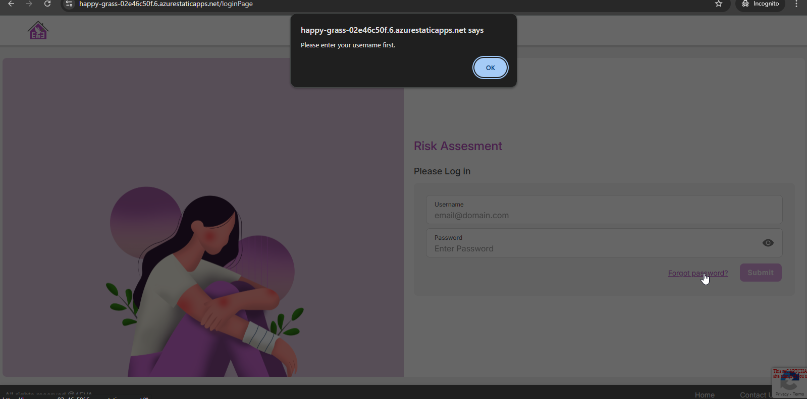
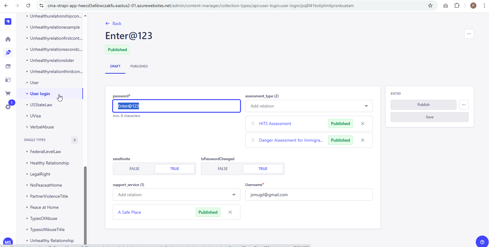

<link rel="stylesheet" href="../css/styles.css">
 
<main>
        <h2>ForgetPassword</h2>
        <h4><b><u>Steps to Reset the Password</u> </b></h4> 
    <p>The user needs to click on Forget Password link by providing the email id, otherwise vallidation will appear.</p>
      
    <p>Enter the valid Emailid/Username and Click on Forget Password, the confirmation Pop up will appear.<br> 
      The Request mail will send to the Admin</p>   
         
    <p> 
      <h4><b><u>CMS Admin Login</u> </b></h4> 
       1.Open the CMS site. 
       <a target="_blank" href=https://cma-strapi-app-heecd3e6bwczakfu.eastus2-01.azurewebsites.net/admin/content-manager/collection-types/api::user-login.user-login/selak5ha2enu0vx06tkrmvkk>User login</a> <br>
       2.Open the Content Manager from the left menu.<br>
       3.Navigate to User login menu.<br>
       4.Select the specific user who gave the request for Password Reset.<br>
       5.Temp.Password should generate automatically.<br>
       6.Click on Publish . <br>
       7.Now the user will receive the mail for the temp password.
    </p>   
        
    
</main>